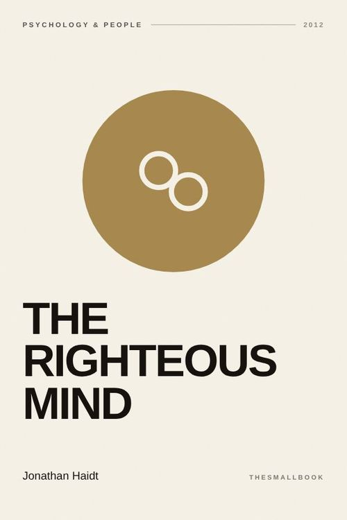

Library › Ask the Library › Why do people disagree with me so much?
Why do people disagree with me so much?
The short answer
People aren't stupid, they run on different moral taste buds. Intuitions come first, reasoning second. Understand the other side's foundations and disagreement stops being war.
The books behind the answer

The Righteous Mind
Jonathan Haidt · 2012 · 8 min · 6 lessons
Intuitions come first, reasoning second. Understand the six moral taste buds and you'll finally get why people disagree.
- The Elephant and the Rider: Intuition decides first; reason just justifies it. That's why arguments rarely change minds.
- The Six Moral Taste Buds: Care, fairness, loyalty, authority, sanctity, liberty, different people weight them differently. That's the whole disagreement.
- Can't We All Disagree More Constructively?: Mixed groups solve problems better, disagreement done well is a superpower.

Surrounded by Idiots
Thomas Erikson · 2014 · 11 min · 8 lessons
People aren't idiots - they're just a different color. Learn Red, Yellow, Green, and Blue, and communication finally makes sense.
- Key lesson: Learn the four behavior types, red, yellow, green, blue, and you'll stop calling people idiots.
A failure that proves it
Why did Boeing's Culture Trade fail?
2019 · EGO · Loss: $20B+, 346 lives, a century of trust
Boeing's engineers stopped disagreeing with management, and two planes fell. Silence is the most expensive agreement.
Culture isn't a poster; it's who wins arguments. The day your cost-cutters can overrule your craftsmen on safety-critical calls, the countdown starts - you just don't know the number.
Questions people ask next
Can I read this in Hindi?
Yes. This answer is written in simple English. Open any linked book and choose Hindi or Hinglish to read the full lessons in your language, with audio where available.